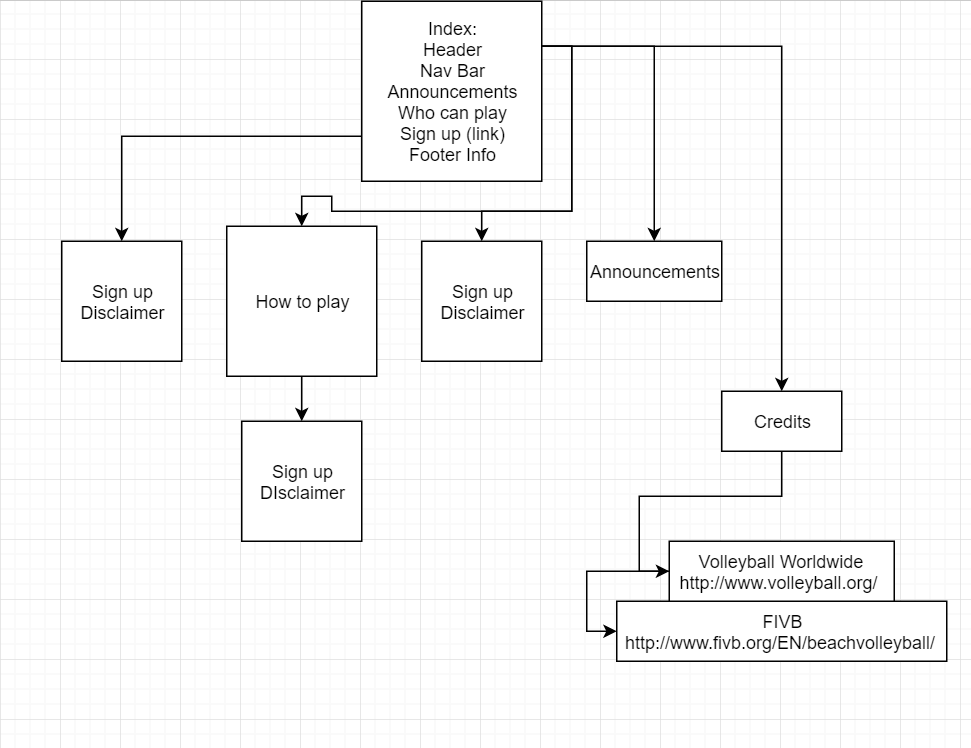

CP1406 - Assignment 1 - Project Plan

Name: ...

Goals

The goal of SlammersSite is to increase the amount of registered volleyball players in Slammers Beach Volleyball

Success Evaluation

Success will be achieved by the growth of registered players by 50% or more (50 players)

Target Audience

The website will attract people from the age of 15 - 30. This will be done by making each call to action be highly eye catching with gradients and colours.
Secondly the important text will be styled differently to the rest of the page. Finally the overall style of the page will be modern (not alot of rounding and
basic colour palette)


Site Flowchart



GitHub Repository

Github name: Lackyjegs
Url:https://github.com/Lackyjegs/Cp1406-VolleyBall-Jack-F-
